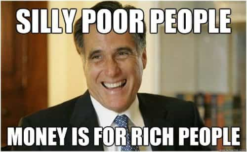

Jared is a middle-aged guy full of old-man wisdom. He's best described as a gentlemen scholar and a man among men. You can read his writing at his site: Legends of Men


There’s an interesting documentary series on Netflix titled Dirty Money. Each episode explores an issue relating to corporate greed. I’m not recommending the whole series (the first episode takes a low blow at The Donald for pulling us out of the Paris Climate Agreement), but the second episode is about a payday loan scandal with some larger implications.
Wealthy elitist Scott Tucker created an umbrella company under the ownership of a Native American tribal chief from Oklahoma. He did this to avoid state laws. The chief agreed to lend his name to this company in exchange for a whopping 1% of profits without having to do anything. All of the payday loan companies under the umbrella company operated out of Kansas and took customers from the internet. When angry customers called the offices employees there said they were located in a reservation in Oklahoma.
Scott Tucker with one of the race cars taken from him after he was found guilty
The payday scam is simple. If a guy takes a payday loan for $500 he’ll have to payback a ridiculous amount like $650. The guy knows that and takes the hit. What he doesn’t know is that the loan company is going to take $75 every two weeks from his account to “hold the loan,” none of which counts toward the $650 he’s willing to pay. After two months the loan company starts taking the $75 to “hold the loan” plus $100 of principal and an additional $30 service fee.
In the lawsuit brought against Tucker the prosecution was able to show that the loan agreements the loan-takers were seeing were extremely misleading. Customers did not know they were making all those payments to “hold the loan”, none of which paid off the principal. That’s one of the reasons Scott Tucker was ultimately tried and convicted to 16 years in prison and why Scott’s brother, who hired everyone who worked at the loan companies, committed suicide.
The “free market” is a myth and payday loans demonstrate that. Free market capitalism expects a competitor to disrupt the payday loan market by offering people a better product. That’s especially true in the age of the internet. If a payday loan company just charged a guy $650 for his $500 loan without all of the hidden charges and misleading agreements that company would be preferable to consumers and still be wildly profitable. But that company doesn’t exist.
One of the things Scott Tucker repeated several times was that his loan companies were just doing the industry standard. The entire industry did it. If there were a free market a competitor would have changed that. If such a competitor does exist, and it isn’t changing the industry, you would have to ask why not. If the market were free people would choose the simpler, better reviewed, cheaper loan business. Yet people still go to the scammers. Either way it just demonstrates that wealthy elites are rigging the game against common guys.

We don’t have a market that competes for your consumer dollars. We have a market that encourages business to coordinate their practices to get as much money from consumers as possible. That’s not a free market.
Business sympathizers argue that payday loan companies fill a void in the market. People are willing to pay the rates. They are providing a service that people want. If consumers can’t be responsible enough to read and decipher their contract agreements they shouldn’t do business with payday loan companies.
What payday loan companies do is legal, they say. Because it is legal and fills a void in the market, loan companies do more good than harm.
Payday loan companies make their loan agreements purposefully deceitful. Because only poor people need payday loans, and because poor people aren’t always the brightest people, payday loan companies essentially prey upon the poor by making them poorer.
The polite way of saying that poor people are dumber is to say that they haven’t received enough education to genuinely comprehend the agreements they are signing. Either way of saying it is true. When it’s all said and done, the rich have become richer and the poor have become poorer.
Replace “deceitful loan agreements” with “divorce rape” and you have similar arguments for and against the legality, or at least the morality, of divorce rape.
Divorce rape serves a purpose: it ensures that women who stayed at home to be a housewife during marriage are supported after divorce, since they couldn’t develop a career while being a housewife. Divorce rape is legal. When men enter in to marriage they are willing to take the risks of being divorce raped. Divorce rape is a legal right people (women) want. If a man isn’t responsible enough to hire a lawyer and get a pre-nup he shouldn’t try to have a nuclear family.
Or…
Divorce rape is a purposefully deceitful practice. Women can cry abuse and take advantage of the system. They can say that they were unable to develop a career even if the husband encouraged them to do so. None of that is written in to law. On the altar, both parties swore til death do them part, yet they aren’t dead and they are parting. This is misleading, especially to the “uneducated.” Divorce rape preys on trusting men. When it’s all said and done a bad wife can live the good life off the husband’s work while a good husband’s life is diminished to financial enslavement.

The question I ask myself when I think about things like payday loans or divorce rape is simple: “What sort of world do I want to inhabit?” I don’t want to live in a world were the rich get richer because the poor are desperate. I don’t want to live in a world where hard-working men can lose everything because their ex-wife lied to a judge about spousal abuse.
The argument that because something is legal it is right to take advantage of it is a poor argument. Legal does not equal moral. If you are in the middle class and a poor family goes homeless while a rich family gets a few thousand dollars, is your world better or worse? You might think it is unchanged, until you wake up to realize that you now live in a third-world slum.
Payday loans might not seem like they effect you, and maybe they don’t directly, but the moral dilemma behind them effects all men, because men can and do rule this world. Right now it’s the global elite men, but maybe one day it won’t be.
For more from Jared Trueheart on the roles of men and women in literature and film check out his writing at Legends of Men.
Read More: The “Free Market” Is A Myth